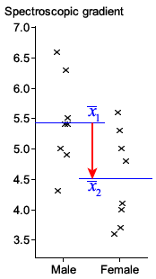

Standard error of difference between means
We will now examine how to estimate the difference between the means of the two normal distributions. We have seen that
\[ \overline{X}_1 - \overline{X}_2 \;\;\sim\;\; \NormalDistn\left(\mu_1 - \mu_2,\;\sigma^2\left(\frac 1{n_1} + \frac 1{n_2}\right)\right) \]and the best estimate of the common variance, \(\sigma^2\), is
\[ \hat{\sigma}^2 \;=\; S_{\text{pooled}}^2 \;=\; \frac{(n_1 - 1)S_1^2 + (n_2 - 1)S_2^2}{n_1 + n_2 - 2} \]If \(\sigma^2\) is unknown, our best estimate of the standard error of \( \overline{X}_1 - \overline{X}_2\) is therefore
\[ \se(\overline{X}_1 - \overline{X}_2) \;=\; \sqrt{S_{\text{pooled}}^2 \left(\frac 1{n_1} + \frac 1{n_2}\right) } \]Pivot
To find a pivot for \(\mu_1 - \mu_2\), we will use the normal distribution of \(\overline{X}_1 - \overline{X}_2\) and the Chi-squared distribution of the pooled variance,
\[ \frac{(n_1 + n_2 - 2)S_{\text{pooled}}^2}{\sigma^2} \;\sim\; \ChiSqrDistn(n_1 + n_2 - 2 \text{ df}) \]Pivot for μ₁ − μ₂
If \(\overline{X}_1\) and \(S_1^2\) are the mean and variance of a sample of \(n_1\) values from a \(\NormalDistn(\mu_1, \sigma^2)\) distribution and \(\overline{X}_2\) and \(S_2^2\) are the mean and variance of an independent sample of \(n_2\) values from a \(\NormalDistn(\mu_2, \sigma^2)\) distribution,
\[ \frac{(\overline{X}_1 - \overline{X}_2) - (\mu_1 - \mu_2)}{\se(\overline{X}_1 - \overline{X}_2)} \;\;\sim\;\; \TDistn(n_1 + n_2 - 2 \text{ df}) \]is a pivot for \(\mu_1 - \mu_2\).
The proof is similar to the one used to get a pivot for a single normal sample's mean. The formula can be rewritten as a ratio of two terms whose independent distributions are as shown below.
\[ \frac{\NormalDistn(0,\;1)}{\sqrt{\Large \frac {\ChiSqrDistn(n_1 + n_2 -2\text{ df})}{n_1 + n_2 - 2}}} \;=\; \TDistn(n_1 + n_2 -2\text{ df}) \]The details are left as an exercise.
Confidence interval
Using the above pivot, a 95% confidence interval for \(\mu_1 - \mu_2\) is
\[ (\overline{x}_1 -\overline{x}_2)\;\; \pm \;\; t_{n_1 + n_2-2,\;0.975}\;\times \se(\overline{x}_1 -\overline{x}_2) \]Example
Is a badly burned or decomposed body male or female? Male and female teeth have different properties. The data on the right were collected from 8 males and 8 females, describing the extent to which X-rays can penetrate tooth enamel at different wavelengths. |
 |
The sample mean and standard deviation of the males are \(\overline{x}_m = 5.425\) and \(s_m = 0.744\), and the corresponding values for the females are \(\overline{x}_f = 4.512\) and \(s_f = 0.761\).
Assuming that the distributions for males and females are both normal and that they have equal variances, find a 99% confidence interval for the difference between the mean spectroscopic gradients for males and females.
The difference between the sample means, \(\overline{x}_m -\overline{x}_f = 0.913\), is our best point estimate of \(\mu_m -\mu_f\), and our best estimate of the common variance is
\[ \hat{\sigma}^2 \;=\; s_{\text{pooled}}^2 \;=\; \frac{7s_m^2 + 7s_f^2}{14} \;=\; 0.566 \]and this has 14 degrees of freedom. The standard error of \(\overline{x}_m -\overline{x}_f\) is
\[ \se(\overline{X}_1 - \overline{X}_2) \;=\; \sqrt{0.566 \left(\frac 1 8 + \frac 1 8 \right) } \;=\; 0.376 \]A 99% confidence interval for \(\mu_m -\mu_f\) is therefore
\[ (\overline{x}_m -\overline{x}_f)\;\; \pm \;\; t_{n_m + n_f-2,\;0.995}\;\times \se(\overline{x}_m -\overline{x}_f) \] \[ 0.913 \;\; \pm \;\; 2.977 \times 0.376 \] \[ -0.21 \;\;\lt\;\; \mu_m -\mu_f \;\;\lt\;\; 2.03 \]